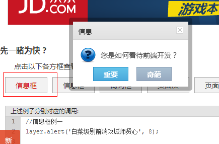
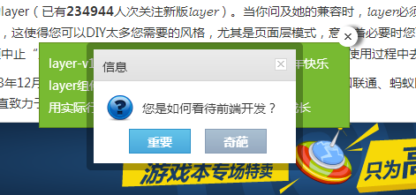
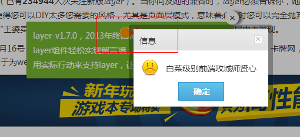
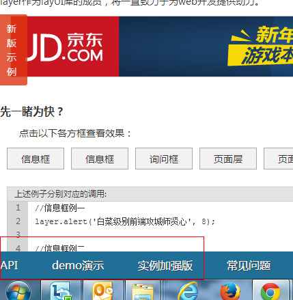
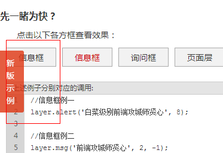
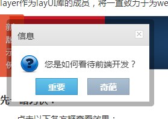
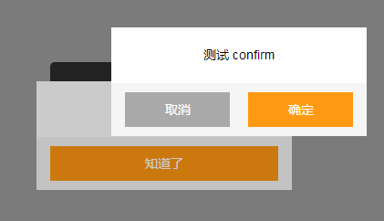

前言
最近总结不多，一方面是之前的知识点多比较基础，所以学习总结起来比较快
但是基础知识只有那么一点，现在当然可以从新知识点着手拓宽视野（这个当然要继续），但是基础积累，再深入学习是成为优秀前端必不可少的阶段
所以这块地方还得死扛，所幸现在是个优秀的团队，身边高手前辈较多，有时候请教是很有方向的，这个很是幸运啊！
其次年后来到公司后，总有点浮浮沉沉的事情发生，而每年的3月又是各个公司“变化”的集中期，所以心境受到了一些影响，此点不可不慎啊！
搞技术的不可浮躁！如果心思过多的花在了“人事”上，那么就真有点背道而驰了，技术人员的核心竞争还是应当在技术上
当然，年后会为年前干的一些事情擦屁股，一般每个团队年前都会有一些烂事没有做完，刚好一些事情就落到了我的头上，于是进入今日的主题
因为边思考便行文，有问题请提出。
弹出层层次关系
以我现有视野来说，单页应用应该是移动端的一个趋势，很多公司或多或少的会要求HTML5的站点表现与APP趋于一致
而好的前端团队的话就会要求HTML5不逊色与APP，当然这块不是不可能发生（在一两年后，应该逐渐明显）
对于非单页应用来说，弹出层的层次关系比较简单，但是依旧会遇到一个弹出层弹出，另一个弹出层也需要弹出的场景
而上述比较“少见”的场景在单页应用中就时常发生了，如果一开始没有对自己框架的层级做设计的话，后面的发展会让你觉得头疼
弹出层的问题
这里先稍微借鉴一点这里的弹出层做说明：http://sentsin.com/jquery/layer/
PS：贤心弹出层是比较全面的，可以少写很多代码说明问题
小议层次关系
通过查看样式我们发现其z-index为：
element.style { background-color: rgb(255, 255, 255); z-index: 19891015; height: 132px; }
那么，我这里就会产生一个疑问，如果再弹出一个alert框呢，当然这里会有以下场景：
① 由于蒙版的存在，只允许一个alert框弹出
② 框架本身做了处理，同一类型的alert框只能有一个
③ 框架对z-index做了处理，第二次弹出的层会遮住第一个（这里还会有其它情况我们稍后再说）
④ 未做特殊处理
现在，我们干一件很2B的事情，将蒙版去掉再点击试试：
通过实验发现，该作者的处理方式如下：
① 只允许一个alert弹出层的出现，与上面②方案类似
② 不同类型的弹出层需要同时出现时候，只会保留最新的一个

比如我们这里点击询问类的弹出层时候，再点击信息框，于是询问类的弹出层就被关闭了，再点击确定就没有了弹出层了
交叉层次处理
当遇到多个层次时候，也是需要处理的，继续以这里的弹出层为例：我们连续弹出两个层

后出来的层会在先出来的层次之前，意思是其z-index的值比较高，这个时候再加上一个loading框的话就比较齐全了

所以，这里我们可以得出一个结论：
作者是以先后出现顺序设计层次结构的（未读源码，具体情况不明）
而，这个还只是第一种层次关系，比较细心的朋友会发现，左边有一个fixed元素：
 
而fixed元素在单页应用中多用作view的头尾，那么alert类的弹出层与fixed头尾又是什么关系呢？？
fixed头尾与弹出层
这里footer的样式如下：
.fixnav { position: fixed; bottom: 0; width: 100%; z-index: 9999; transition: all .8s; background: #206F96; }
与上千万的弹出层来说就比较渺小了

所以弹出层应该遮盖头尾（fixed），这个处理也是有道理的，但是这里也会有一个问题
头部是否应该被遮盖
对于单页应用来说，头部是否应该被遮盖呢？
这个不同的人会有不同的想法：
① 不应该被遮盖
如果一个loading框加载失败，而代码又未做处理的话，用户除了刷新页面或者退出程序别无他法
现在很多html5代码会同时用于app中，而app的头部是不可遮盖的
② 应该被遮盖
简单而言，弹出层出现时不遮盖头部会引起很多BUG，对代码的健壮性要求更高
比如，弹出层出现时候，点击后退，如果业务代码未对弹出层作出处理的话，这个弹出层不会消失
另外，如果view切换过程中会有动画效果的话，view的会被设置为absolute，那么此时alert与页面view会有层级关系
所以，保险的方案，应该是遮盖头部
出现次数问题
我们看到该作者的处理是相同的控件只能出现一次，这个处理方法对于单页应用来说可能就有一定麻烦了：
① 我们当然可以在控制器中设置一些经常出现的弹出层插件：
alert类，弹出层类，让他们只能出现一次，但是实际项目中，极有可能出现各个view对弹出层的需求不一样的需求
这个时候我们的弹出层应该被控制么？
② 弹出层会自带蒙版（mask），这个蒙版又该出现几次呢
③ 全屏覆盖层（广告类，或者其他）又该处于什么层次呢？？？
让我们带着这些问题一一学习今日的知识
全局唯一的弹出层
由设计的角度来说，无论是出现蒙版还是其它因素，我们对一些弹出层是只要求单独存在的，比如，我们不会希望同时存在两个alert
所以，我们先整理哪些弹出层只会出现一次：
① alert 类警告层
② confirm 类确认层
③ toast类消息层
④ loading类加载层
⑤ 其它类似弹出层
以上弹出层事实上全局只应该有一个，dom一旦存在就不会销毁，但是这里也会有其它问题，比如我们这个confirm吧
统一控件不同行为
我们现在在demo01时候希望点击确定时候弹出个确定的提示，而提示相关有所不同的话......
就需要每次show的时候传递参数复写上一次的事件等相关数据：
showConfirm: function (message, title, okFn, cancelFn, okTxt, cancelTxt) { //如果传入的是对象的话，直接用作初始化 if (typeof message == 'object' && message.message) { this.confirm.setViewData(message); } else { this.confirm.setViewData({ message: message, title: title, buttons: [ { text: (cancelTxt || '取消'), click: function () { if (typeof cancelFn == 'function') { cancelFn(); } this.hide(); }, type: Alert.STYLE_CANCEL }, { text: (okTxt || '确定'), click: function () { if (typeof okFn == 'function') { okFn(); } this.hide(); }, type: Alert.STYLE_CONFIRM } ] }); } this.confirm.show(); },
这块的结论是：
同一控件需要在show时候动态改变事件句柄相关参数，以达到dom结构重复利用的目的
这个操作是很简单的，有问题的是我们的mask控件，如果我们的mask控件具有点击mask关闭alert控件功能的话，情况就有所不同了
需要几个mask
我们的框架到底需要几个mask，这个问题其实比较关键
全局只有一个mask，dom代码清晰，这个想法非常合理，但不易操作
怎么说呢，如果存在两个弹出层同时存在的情况，A弹出层出来后，B弹出层再出来，这个时候A的蒙版应该比A高比B低
这个时候关掉B，mask又应该比A低，于是我们需要去动态调整蒙版的zindex
以上场景已经比较烦了，如果我们有点击蒙版关闭插件的需求的话，我们点击蒙版时候该关闭B还是该关闭A呢？？？
情况又变得复杂起来，实现起来容易照成BUG，所以简单的方案还是，每个弹出层为其配置一个mask，是否具有点击关闭特性由插件决定
比如loading框就不具有关闭特性，所以结论是：
为每一个弹出层配置单独mask是比较简单的处理方案
阻止弹出层层次
弹出层出现次数确定后，第二个问题就是其出现时候的层级关系，我们这里采用：
按弹出层出现先后顺序确定其层级
比如我们几个层同时出现时候，我们就按照其出现顺序定义谁在钱谁在后，在后面的会被蒙版遮住（这里可能会导致蒙版愈来愈黑）

那么这个时候层次关系应该怎么确定呢，或者说，我怎么知道我每次取得的z-index都会最大，这个其实就和我们前面的uuid是一个道理了
base.getBiggerzIndex = (function () { var diviso = 1000; return function () { return ++diviso; }; })();
每次设置index时候都在这里来获取z-index即可
header与footer
header与footer根据我们前面的想法，应该是被遮住的，所以，我们直接将其z-index设置为500即可
但是这个时候依旧会有一些特殊的情况，比如warning404等情况
404提示
一般来说，404页面应该比一般弹出层低，并且比header低，但是比footer高，为什么这么说呢
因为header可能全局只有一个，而footer来说属于单个view，比如提交订单的按钮
这个时候404提示应该遮盖所有的页面，但是不能遮盖头部
页面层级
页面切换来说，会将view转化为absolute，这个时候也会有一定层级的，这个时候又会有许多问题，比如footer栏为fixed元素，整个view切换时候他并不会跟着移动
所以，我们应该将footer栏做成组件，在切换时候将之隐藏
页面切换时候的层级应该比header低，但是比一般的弹出层要高，所以我们最后可以形成以下规则
第一级别：（0）
文档流元素
第二级别：（500）
footer类组件，需要在文档流之上，依旧属于view内部
第三级别：（1000）
404提示类，需要覆盖view内的所有元素，但不能遮盖头部，属于遮盖view内部的弹出层
第四级别：（1500）
view切换时候的层级
此时view的层级会比404等层级高
框架切换时候需要对弹出层进行hide
第五级别：（2000）
header类，头部
第六级别：（3000+）
一般类弹出层，根据弹出先后顺序计算
结语
今天正好在整理框架的层级关系，将思考到的东西做了一定记录，如果各位对此有研究请不吝赐教